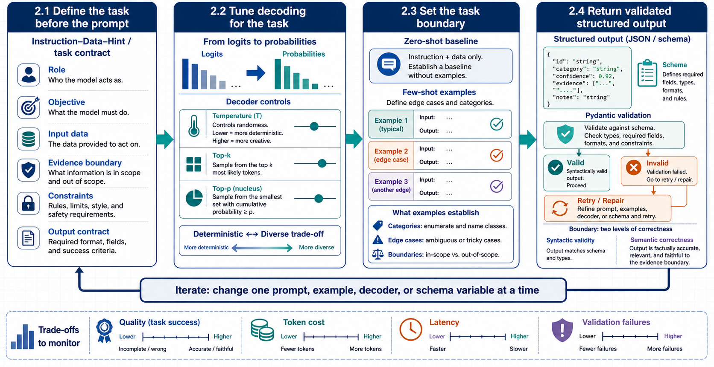

2 Prompt design and structured output
Chapter 1 established how a checkpoint turns a token prefix into a continuation. A useful application must also state what the request means, what the model may use, and what form of answer the application can accept. This chapter turns those requirements into a repeatable request: task definition, token-generation parameters, demonstrations, structured output, and validation.

The visual separates probability shaping from instruction and schema design; both must be versioned and evaluated together because prompt wording cannot repair every decoder or validation failure.
2.1 Task definition and prompt design
The same model can perform many tasks because the current request tells it which task to attempt. When that request is vague, the model must guess the task, the allowed evidence, and the acceptable output from patterns in its training data. A task specification states the goal, supplied data, allowed evidence, response fields, and what to return when evidence is missing before prompt wording is tuned.
A useful prompt names an observable task rather than only giving the model a persona. It marks which text is input data, what transformation to perform, which claims need evidence, and which output the application can check. Delimit user-provided and retrieved text so that text inside the data is not mistaken for application policy.
System instruction: Stable application rules placed at the highest available message priority. They describe durable limits and required handling, not facts that change with each request.
User request: The current task or question. It can include user data, but the application must still treat that data as input rather than as a rule that overrides its own policy.
Output specification: The fields, types, allowed values, evidence requirements, and missing-evidence response that make a model answer usable by the next program step.
Prompt review questions
What decision will consume the answer?
Which facts may the model use, and which text is untrusted data?
What must be present for the caller to accept the output?
How should missing or conflicting evidence be reported?
A task specification describes observable behavior before prompt language is chosen. It names the input type, allowed evidence, expected output fields, acceptance criteria, refusal or escalation behavior, and any side effects that remain outside the model. This distinction prevents prompt wording from silently becoming the only specification of the product.
The task specification also separates hard constraints from preferences. Schema validity, authorization, and required evidence can be checked deterministically. Tone, usefulness, and completeness often require calibrated human or model judgment. When these dimensions are mixed into one instruction, a fluent answer can appear successful even though a required field, source, or refusal condition is missing.
2.2 Task-specific token generation parameters
The previous chapter defined temperature, top-k, top-p, greedy selection, and sampling as transformations of one next-token distribution. The remaining question is which differences between repeated answers are acceptable for this task and which are errors. Start with a low-variation baseline, change one token-generation parameter at a time, and measure answer quality, diversity, latency, and errors on fixed cases.
Extraction, classification, routing, and schema-constrained tasks normally benefit from concentrated decoding because variation creates inconsistent labels without adding useful information. Brainstorming and candidate generation can use broader sampling when downstream ranking or human selection is part of the design. Neither setting is intrinsically correct: the task specification defines which differences count as acceptable alternatives and which count as defects.
Record top-k and top-p with the other request settings. A lower temperature can still produce different answers when retrieval, tools, batching, serving software, or provider versions change. Repeated evaluation must therefore test the whole application, not one setting in isolation.
| Task pattern | Useful starting policy | Evidence before release |
|---|---|---|
| Typed extraction or routing | Low temperature, bounded output, schema validation | Repeated schema-valid rate, class errors, and unsupported fields |
| Grounded question answering | Low-to-moderate variation with explicit citations | Faithfulness, evidence use, empty-retrieval behavior, and latency |
| Candidate ideation | Moderate sampling with a fixed candidate budget | Diversity, usefulness, duplicate rate, downstream selection cost |
| Code or plan search | Multiple bounded attempts when tests or verifiers exist | Single-attempt reliability, pass@k, tool cost, and failure correlation |
2.3 Demonstrations and decision boundaries
A written task specification defines the desired behavior in prose. Some boundaries remain ambiguous until the model sees representative inputs and outputs. Zero-shot instructions establish a baseline; few-shot examples then demonstrate edge cases, output shape, and category meaning only when the baseline needs them.
Zero-shot prompting supplies instructions without demonstrations. It is the simplest baseline and makes unnecessary scaffolding visible. Few-shot prompting adds examples inside the request. Examples are especially helpful for smaller models, uncommon labels, or formatting behavior that prose alone does not define reliably.
Examples must cover the input dimensions that change the decision. Five nearly identical positive cases teach less than a small set spanning clear positive, clear negative, ambiguous, and out-of-scope cases. Example selection can itself become a retrieval problem: store a larger bank, embed the current request, and include only relevant demonstrations.
Instruction, data, and a final reminder
Long requests can bury the task under a large block of source text. In that case, state the instruction first, clearly delimit the data, and end with one short reminder of the transformation or output required.
This pattern helps when the model loses the task after reading the data. Do not repeat long or conflicting instructions: they consume context space and can leave the model with two incompatible requests.
Positive constraints usually communicate the target more directly than a long list of prohibitions. A prompt can request policy clauses supported by the supplied evidence and a clear insufficient_evidence result. That tells the model and the application what to do when the evidence is not enough. Examples can then show where those rules meet ambiguous inputs.
Demonstrations define a local decision boundary by pairing an input pattern with an acceptable output. Their value comes from coverage, not volume. A small set spanning positive, negative, ambiguous, boundary, and out-of-scope cases usually conveys more structure than many near-duplicates. The example bank can be versioned and selected per request when the full set would consume too much context.
Example order and similarity can change model behavior, so demonstration selection becomes part of the evaluated system. A nearest-neighbor selector may improve topical relevance while reinforcing mislabeled or redundant examples. Evaluation can compare a fixed set, a retrieved set, and a no-example baseline while retaining the exact example identifiers shown to the model.
2.4 Structured output and software validation
Examples can demonstrate categories and formatting, but downstream code still needs a stable parseable result. Natural-language formatting instructions do not guarantee valid fields or values supported by the supplied evidence. A structured-output path combines a schema, constrained generation when available, application validation, and evidence checks.
A JavaScript Object Notation (JSON) schema can restrict field names, types, required values, and allowed values. Provider-side schema enforcement reduces syntax failures, but it cannot prove that a label or cited identifier follows from the input. Validation therefore has two layers: structural validation checks the response shape; evidence validation checks each field against the supplied data and application rules.
Code example 2.1 - a typed classification request separates policy, data, and the accepted result shape.
Code example: Code example 2.1 - a typed classification request separates policy, data, and the accepted result shape.
from pydantic import BaseModel
from typing import Literal
class TicketDecision(BaseModel):
route: Literal["faq", "specialist", "out_of_scope"]
evidence_ids: list[str]
rationale: str
decision = client.responses.parse(
model=model_name,
input=[
{"role": "system",
"content": "Route only from supplied evidence. Report missing evidence."},
{"role": "user",
"content": f"<ticket>{ticket_text}</ticket>"},
],
text_format=TicketDecision,
).output_parsed
assert set(decision.evidence_ids) <= retrieved_evidence_idsTicketDecision is a data type used by the application. The schema constrains route; the evidence assertion checks that the model did not invent a record identifier. A separate application rule decides whether specialist creates a queue entry or only recommends one.
A valid structure is not evidence
A perfectly valid JSON object can still contain an unsupported claim. Treat schema success, evidence support, and permission to act as three separate checks.
A model response becomes usable only when token-generation parameters, instructions, examples, schemas, and validators work together. Chapter 3 adds the wider request context: history, evidence, tools, and stored information selected for one request.
Structured output creates two validation layers. Structural validation checks that fields, types, enumerations, and required values match the schema. Semantic validation checks claims that the schema cannot prove, such as whether a cited record was retrieved, whether a numeric total equals the underlying rows, or whether an escalation reason follows policy.
Repair behavior depends on which layer failed. A parse error may justify one constrained retry or a deterministic repair. A semantically unsupported claim triggers new evidence, a different route, or an insufficient-evidence outcome. Formatting alone cannot establish support. Recording raw output, parsed output, validation results, and retry reason makes these cases distinguishable during evaluation.